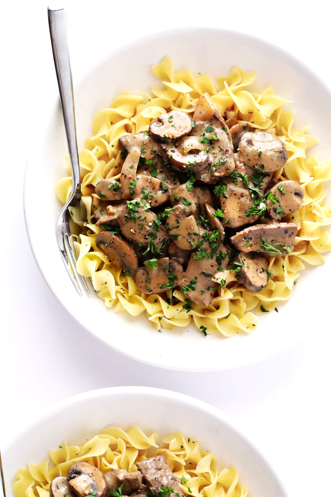

Beef Stroganoff

Description
Beef Stroganoff is a classic Russian dish featuring tender strips of beef in a creamy, savory sauce made with mushrooms, onions, and sour cream. It's a comforting and flavorful meal typically served over egg noodles.
Ingredients
- 1 lb beef (sirloin, ribeye, or tenderloin), thinly sliced
- 1 tablespoon olive oil
- 1 onion, sliced
- 8 oz sliced mushrooms
- 2 tablespoons butter
- 2 tablespoons all-purpose flour
- 2 cups beef broth
- 1 tablespoon Dijon mustard
- 1/2 cup sour cream
- Salt and pepper to taste
- Egg noodles, cooked, for serving
Steps
- Brown the beef: Season beef with salt and pepper. Heat olive oil in a skillet over medium-high heat. Brown beef in batches, without overcrowding the pan. Remove beef and set aside.
- Sauté vegetables: Add sliced onion and mushrooms to the pan. Cook until softened, about 5 minutes.
- Make the sauce: Melt butter in the skillet, whisk in flour and cook for 1 minute. Slowly add broth, whisking to avoid lumps. Stir in Dijon mustard, then bring to a simmer and cook until sauce slightly thickens (about 5 minutes).
- Finish the Stroganoff: Return the beef to the pan and simmer for a few minutes to warm through. Turn off heat and stir in sour cream (do not let the sour cream boil). Season with salt and pepper.
- Serve: Serve hot over cooked egg noodles.